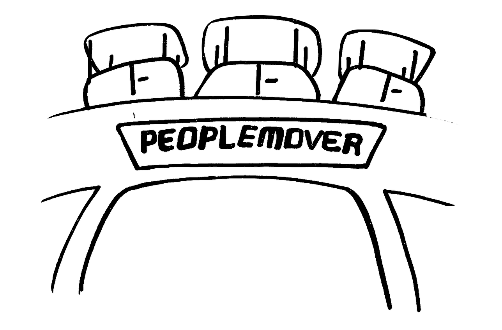

PeopleMover: 2 Deaths
In August 1967, a 17-year-old boy from Hawthorne, California was killed while jumping between two moving PeopleMover cars as the ride was passing through a tunnel. He stumbled and fell onto the track, where an oncoming train of cars crushed him beneath its wheels and dragged his body a few hundred feet before it was stopped by a ride operator. The attraction had only been open for one month at the time.
On June 7, 1980, an 18-year-old guest was crushed and killed by the PeopleMover while jumping between moving cars. The accident occurred as the ride entered the SuperSpeed tunnel and was very similar to the 1967 incident.